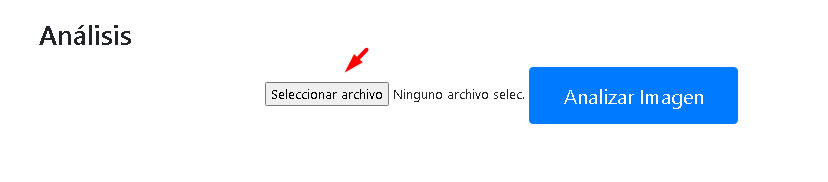
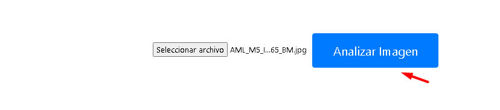
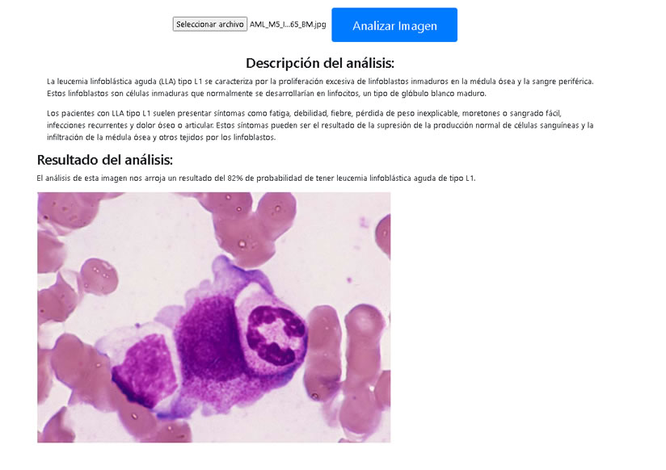

Modo de Uso
- Cargar la imagen en los siguientes formatos: jpg, png, gif, svg, presionando el botón "Seleccionar archivo".

- Presionar el botón "Analizar".

- El resultado muestra el porcentaje de precisión del algoritmo, juntamente con una descripción corta del subtipo.
